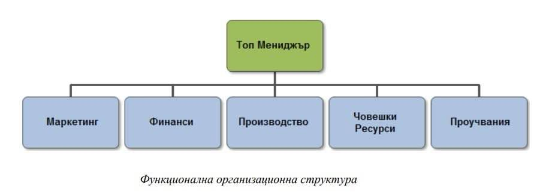

Линейна организационна структура
Линейна структура e вид управленска структура и се характеризира с централизация на властта, която е съсредоточена в едно лице. Властта на мениджърите се предава вертикално по йерархичните нива на организацията.

Линейно-функционална (щабна) структура
Линейно функционалната организационна структура комбинира елементи от линейната и функционалната структура, като обикновено има вертикална йерархия.При този тип структура управлението включва екипи от специалисти.

Функционална организационна структура
Функционална структура е широко разпространена в бизнеса, тъй като позволява на експертите в различни области да упражняват властта си в съответните отдели.
Проектна организационна структура
Проектната структура е временен модел, който се формира за конкретен проект и определен период от време. Когато компанията има за цел да създаде нов продукт, специалистите от различни отдели се интегрират в проектния екип и съвместно работят върху него.
Матрична организационна структура
Матричната структура е разпределена между функционалните и проектните мениджъри. Проектните мениджъри имат отговорността за ръководенето на проектите и за управлението на ресурсите, необходими за тяхното изпълнение.
Високойерархична и плоска организационна структура
При плоската организационна структура, предприятието има малко нива на управление, което води до по-гъвкав и открит работен процес. Плоските структури са по-децентрализирани от високите.
Високойерархична структура е централизирана и има ясно изразена вертикална подредба на властта и отговорностите. Всяко ниво има свои конкретни задължения и отговорности, а комуникацията и решенията преминават отгоре надолу.
Високойерархична структура е централизирана и има ясно изразена вертикална подредба на властта и отговорностите. Всяко ниво има свои конкретни задължения и отговорности, а комуникацията и решенията преминават отгоре надолу.